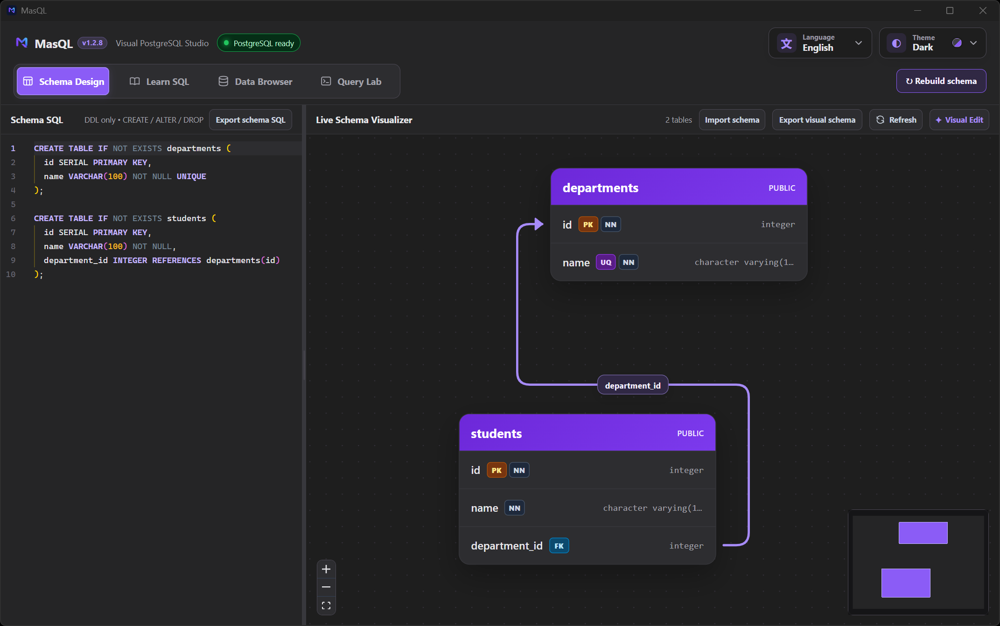
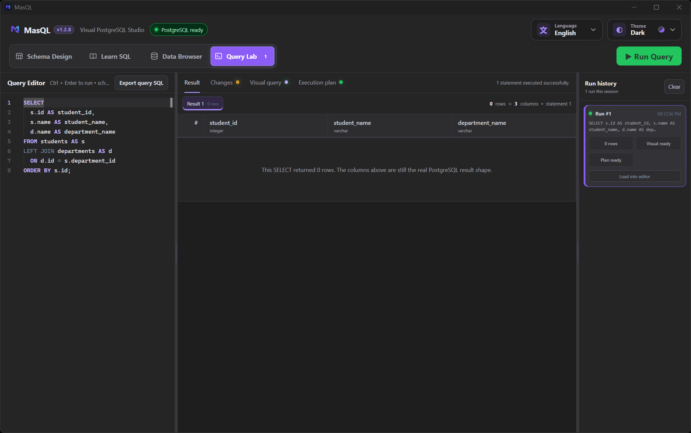
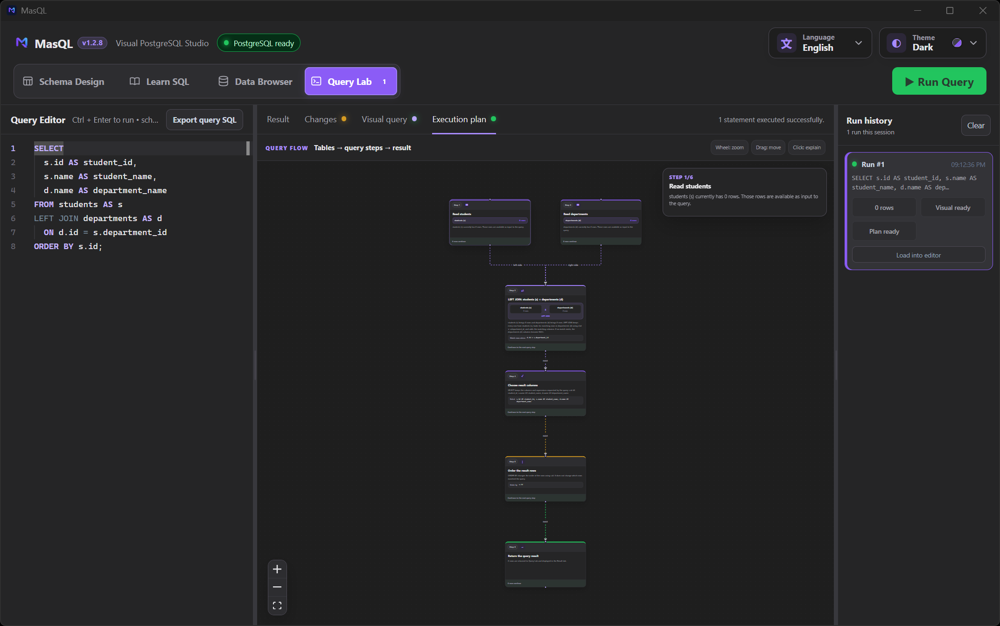
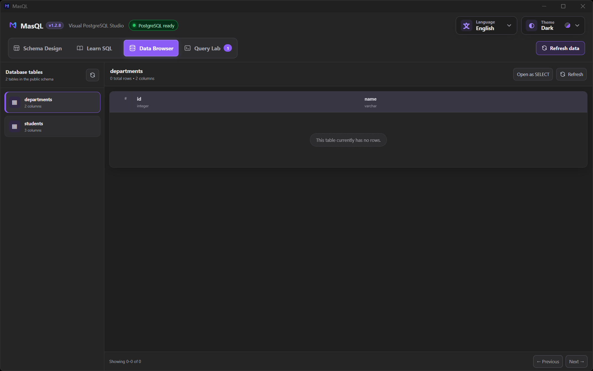
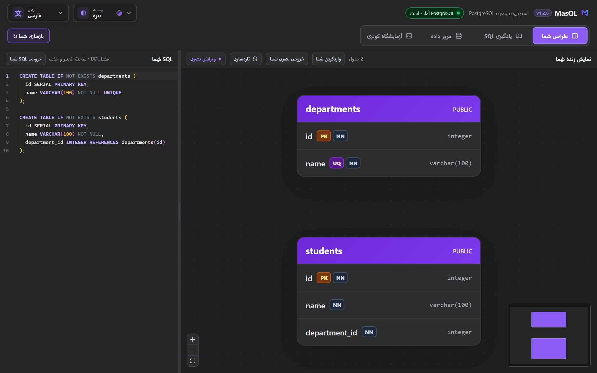

See your database.
Make sense of SQL.
A visual PostgreSQL studio. A hands-on place to learn SQL.
- Windows 10 / 11
- Works offline
- Free to use

From a query to understanding.
Write SQL, inspect the result, and follow how PostgreSQL executes it.
Write. Run. Inspect.
A focused SQL editor with autocomplete, results, and query history.


Understand the work.
Read PostgreSQL plans as explained stages, from scans to joins.



Get to know your data.
Browse table records and open a table in the Query Lab.


Learn by writing real SQL.
Read a short tutorial, explore the schema, then solve two independent parts.
Beginner stages
SELECT, filtering, joins, data changes, tables, keys, and transactions.
Intermediate stages
Window functions, recursive CTEs, inventory, and analytical reporting.
Final project
A large relational schema and a demanding revenue analysis challenge.

Your workspace. Your language.
English and Persian, with right-to-left layouts and six color themes.
- An embedded PostgreSQL engine. No server setup.
- Export schema and query SQL, or save a clean diagram image.
- Your project and learning progress stay on your computer.


Your next query starts here.
Install MasQL. Start with a local PostgreSQL database.
Install in a few steps
- Download the installer.
- Close MasQL before updating.
- Run setup and follow the instructions.
Unsigned installer. Windows may show a SmartScreen notice; verify the SHA-256 checksum.
SHA-256 checksum
469ef6f4372dfda2883fb3f6bcd392b39789a731f2f1c964ca1a97c1d84961a0Before you start.
Do I need to install PostgreSQL?
No. MasQL includes PGlite, an embedded PostgreSQL engine. You can use the local database without configuring a separate server.
How are learning exercises scored?
Each stage has two different parts. Submit a part using the check button. Passing one part gives 50%; passing both completes the stage at 100%. Typing alone does not trigger grading.
Does it work on macOS or Linux?
The current published installer is for Windows x64. macOS, Linux, and native ARM64 installers are not available in this release.
Will an update keep my work?
The installer is designed to retain your existing project and learning progress. Close MasQL before updating and export important SQL files as a backup.